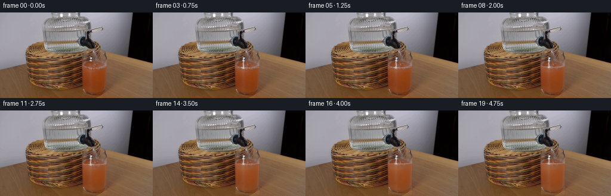
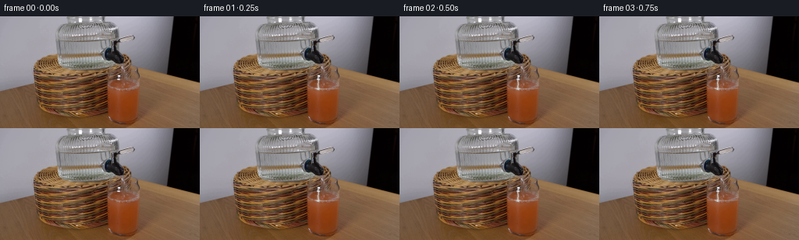

CODING AGENTS AS PIXEL WORLD MODELS
traex/DeepSeek-V4.1-Flash · 0184
点击播放 · 原生 RGB 像素
逐轮保存的候选
回放视频、检查图与代码变化。
每份候选均可单独播放。实际图片检查记录在下方工具轨迹中。
候选 01播放与检查图
点击播放 · 原生 RGB 像素


展开代码变化
--- 上一保存版本
+++ 本次保存版本
@@ -0,0 +1,201 @@
+"""Generate a fixed-camera pour into a glass of grapefruit juice."""
+
+from pathlib import Path
+
+import numpy as np
+from PIL import Image
+
+import artifact_io
+
+
+CASE_DIR = Path(__file__).resolve().parent
+FRAME_COUNT = 20
+HEIGHT = 144
+WIDTH = 256
+
+
+def smoothstep(value):
+ value = np.clip(value, 0.0, 1.0)
+ return value * value * (3.0 - 2.0 * value)
+
+
+def soft_circle(distance, radius, feather):
+ return np.clip((radius + feather - distance) / feather, 0.0, 1.0)
+
+
+def vertical_sample(image, sample_y):
+ """Sample an RGB image at fractional row positions, keeping columns fixed."""
+ y0 = np.floor(sample_y).astype(np.int32)
+ y1 = np.minimum(y0 + 1, image.shape[0] - 1)
+ weight = (sample_y - y0)[..., None]
+ index0 = np.broadcast_to(y0[..., None], image.shape)
+ index1 = np.broadcast_to(y1[..., None], image.shape)
+ top = np.take_along_axis(image, index0, axis=0)
+ bottom = np.take_along_axis(image, index1, axis=0)
+ return top * (1.0 - weight) + bottom * weight
+
+
+def render_frame(source, frame_index):
+ """Render one frame, retaining the source scene outside the pour region."""
+ if frame_index == 0:
+ return source.copy()
+
+ frame = source.astype(np.float32).copy()
+ yy, xx = np.mgrid[0:HEIGHT, 0:WIDTH]
+
+ # The first frame establishes a level just under the rim. The final level is
+ # about four source pixels higher, which reads clearly at this resolution.
+ progress = smoothstep(frame_index / (FRAME_COUNT - 1))
+ level = 92.7 - 4.0 * progress
+ time = frame_index / 4.0
+
+ inside_x = np.clip(np.minimum(xx - 137.7, 178.2 - xx), 0.0, 1.0)
+ inside_y = np.clip(np.minimum(yy - 78.0, 141.5 - yy), 0.0, 1.0)
+ glass_alpha = inside_x * inside_y
+
+ # The stream pushes a shallow depression into the middle of the surface.
+ centered_x = xx - 151.3
+ ripple_envelope = np.exp(-np.abs(centered_x) / 12.0)
+ wave = (
+ 0.38 * np.sin(centered_x * 0.62 - time * 8.0)
+ + 0.16 * np.sin(centered_x * 1.24 + time * 4.8)
+ ) * ripple_envelope
+ impact_depression = 1.10 * np.exp(-((centered_x / 2.8) ** 2))
+ meniscus = (
+ 0.48 * np.exp(-(((xx - 139.0) / 1.6) ** 2))
+ + 0.48 * np.exp(-(((xx - 176.9) / 1.6) ** 2))
+ )
+ surface_y = level + wave + impact_depression - meniscus
+
+ # Liquid coverage has a subpixel edge so the moving surface remains smooth.
+ fluid_alpha = np.clip((yy - surface_y) / 0.85 + 0.5, 0.0, 1.0)
+ fluid_alpha *= glass_alpha
+
+ # Carry the source's surface-relative shading upward as the level rises.
+ source_level = 92.7
+ level_shift = source_level - level
+ near_surface = np.clip((96.5 - yy) / 4.0, 0.0, 1.0)
+ sample_y = np.clip(yy + level_shift * near_surface, 0, HEIGHT - 1)
+ texture = vertical_sample(source.astype(np.float32), sample_y)
+
+ # Water gradually dilutes the grapefruit juice toward a warm, still-saturated
+ # amber. The mix is deliberately restrained over five seconds.
+ water_color = np.array([204.0, 170.0, 132.0], dtype=np.float32)
+ dilution = 0.13 * progress
+ liquid = texture * (1.0 - dilution) + water_color * dilution
+
+ depth = np.maximum(yy - surface_y, 0.0)
+ liquid += (3.5 * np.exp(-depth / 7.0))[..., None]
+
+ # Concentric rings travel away from the point of impact.
+ radius = np.sqrt((centered_x * 1.0) ** 2 + (depth * 2.5) ** 2)
+ ring_phase = np.mod(radius - time * 16.0, 10.5)
+ rings = np.exp(-((ring_phase - 5.25) / 0.9) ** 2)
+ rings *= np.exp(-depth / 3.2) * np.exp(-np.abs(centered_x) / 16.0)
+ ripple_tint = np.array([211.0, 183.0, 151.0], dtype=np.float32)
+ liquid = liquid * (1.0 - 0.085 * rings[..., None])
+ liquid += ripple_tint * (0.085 * rings[..., None])
+
+ alpha = fluid_alpha[..., None]
+ frame = frame * (1.0 - alpha) + liquid * alpha
+
+ # A narrow specular line and darker meniscus make the new level legible.
+ surface_distance = yy - surface_y
+ surface_glint = np.exp(-((surface_distance / 0.54) ** 2))
+ surface_glint *= glass_alpha
+ surface_glint *= 0.74 + 0.26 * np.cos(centered_x * 0.34 - time * 3.2)
+ glint_color = np.array([222.0, 198.0, 171.0], dtype=np.float32)
+ frame = frame * (1.0 - 0.22 * surface_glint[..., None])
+ frame += glint_color * (0.22 * surface_glint[..., None])
+
+ dark_edge = np.exp(-(((surface_distance + 1.55) / 0.62) ** 2))
+ dark_edge *= glass_alpha * 0.12
+ frame *= 1.0 - 0.24 * dark_edge[..., None]
+
+ # Render the falling stream in front of the glass, from the hanging drop to
+ # the depressed impact point.
+ stream_region = (
+ (yy >= 78.0)
+ & (yy <= surface_y + 0.8)
+ & (xx >= 147.0)
+ & (xx <= 156.0)
+ )
+ centerline = 151.45 + 0.27 * np.sin((yy - 78.0) * 0.78 - time * 10.0)
+ centerline += 0.10 * np.sin((yy - 78.0) * 1.9 + time * 5.0)
+ stream_distance = np.abs(xx - centerline)
+ stream_width = 0.72 + 0.24 * np.clip((yy - 80.0) / 12.0, 0.0, 1.0)
+ stream_core = np.exp(-((stream_distance / stream_width) ** 2))
+ stream_halo = np.exp(-((stream_distance / (stream_width + 1.0)) ** 2))
+ stream_alpha = (0.23 * stream_halo + 0.57 * stream_core) * stream_region
+
+ moving_glint = 0.5 + 0.5 * np.sin(yy * 2.55 - time * 31.0)
+ moving_glint = 0.58 + 0.42 * moving_glint
+ water_rgb = np.array([188.0, 207.0, 214.0], dtype=np.float32)
+ highlight_rgb = np.array([224.0, 233.0, 236.0], dtype=np.float32)
+ stream_color = water_rgb + (highlight_rgb - water_rgb) * (
+ stream_core * moving_glint
+ )[..., None]
+ frame = frame * (1.0 - stream_alpha[..., None])
+ frame += stream_color * stream_alpha[..., None]
+
+ # A compact splash crown and a few ballistic droplets supply the impact cue.
+ impact_y = level + 0.2
+ crown = np.exp(-((centered_x / 5.3) ** 2))
+ crown *= np.exp(-(((yy - (impact_y - 0.25)) / 0.75) ** 2))
+ crown *= 0.42 + 0.20 * np.sin(time * 13.0 + centered_x * 0.8)
+ crown_alpha = np.clip(crown, 0.0, 0.34) * glass_alpha
+ splash_rgb = np.array([220.0, 226.0, 220.0], dtype=np.float32)
+ frame = frame * (1.0 - crown_alpha[..., None])
+ frame += splash_rgb * crown_alpha[..., None]
+
+ directions = (-1.0, 1.0, -1.0, 1.0, -1.0, 1.0)
+ strengths = (3.6, 4.7, 2.7, 3.3, 5.5, 4.0)
+ for droplet_index, (direction, strength) in enumerate(zip(directions, strengths)):
+ age = np.mod(frame_index * 0.25 + droplet_index * 0.135, 0.82)
+ droplet_x = 151.3 + direction * strength * age
+ droplet_y = impact_y - (2.7 * age - 3.7 * age * age)
+ distance = np.sqrt((xx - droplet_x) ** 2 + (yy - droplet_y) ** 2)
+ droplet_alpha = 0.52 * soft_circle(distance, 0.42, 0.65)
+ droplet_alpha *= 1.0 - age / 0.9
+ frame = frame * (1.0 - droplet_alpha[..., None])
+ frame += np.array([213.0, 224.0, 224.0], dtype=np.float32) * (
+ droplet_alpha[..., None]
+ )
+
+ # Tiny foam bubbles sit just below the pour point and drift only slightly.
+ for bubble_index in range(4):
+ bubble_x = 148.4 + bubble_index * 2.0 + 0.28 * np.sin(
+ time * 3.1 + bubble_index
+ )
+ bubble_y = impact_y + 1.4 + 0.35 * np.sin(
+ time * 2.2 + bubble_index * 1.7
+ )
+ distance = np.sqrt((xx - bubble_x) ** 2 + (yy - bubble_y) ** 2)
+ bubble_alpha = 0.12 * soft_circle(distance, 0.32, 0.55)
+ frame = frame * (1.0 - bubble_alpha[..., None])
+ frame += np.array([210.0, 188.0, 159.0], dtype=np.float32) * (
+ bubble_alpha[..., None]
+ )
+
+ # Keep every edit strictly inside the hand-selected action region.
+ action_mask = (xx >= 136) & (xx <= 180) & (yy >= 76) & (yy <= 142)
+ frame = np.where(action_mask[..., None], frame, source)
+ return np.clip(np.rint(frame), 0, 255).astype(np.uint8)
+
+
+def main():
+ source_image = Image.open(CASE_DIR / "first_frame.png").convert("RGB")
+ if source_image.size != (WIDTH, HEIGHT):
+ raise ValueError(f"Unexpected first-frame size: {source_image.size}")
+ source = np.asarray(source_image, dtype=np.uint8)
+
+ frames = np.empty((FRAME_COUNT, HEIGHT, WIDTH, 3), dtype=np.uint8)
+ frames[0] = source
+ for frame_index in range(1, FRAME_COUNT):
+ frames[frame_index] = render_frame(source, frame_index)
+
+ artifact_io.save(frames, CASE_DIR)
+
+
+if __name__ == "__main__":
+ main()
可观测工具轨迹
实际执行的命令与返回图片。
命令 1exit 0
/bin/bash -c "pwd && rg --files -g '"'!*.mp4'"' -g '"'!*.webm'"' -g '"'!*.mov'"' | sort"
命令 2exit 0
/bin/bash -c "sed -n '1,240p' GENERATION_RULES.md"
命令 3exit 0
/bin/bash -c "sed -n '1,240p' prompt.txt"
命令 4exit 127
/bin/bash -c "file first_frame.png && identify -verbose first_frame.png | sed -n '1,80p'"
命令 5exit 0
/bin/bash -c "sed -n '1,260p' artifact_io.py"
命令 6exit 0
/bin/bash -c "sed -n '1,260p' player_template.html"
命令 7exit 0
/bin/bash -c "python - <<'PY'
from PIL import Image
im=Image.open('first_frame.png')
print(im.mode, im.size)
import numpy as np
a=np.asarray(im.convert('RGB'))
print('shape',a.shape,'dtype',a.dtype,'minmax',a.min(),a.max())
print('unique',len(np.unique(a.reshape(-1,3),axis=0)))
for y in [0,8,16,24,32,40,48,56,64,72,80,88,96,104,112,120,128,136,143]:
row=a[y]
# quantized run lengths at 32 level bins
q=(row//32).astype(int)
runs=[]; s=0
for x in range(1,256):
if not np.array_equal(q[x],q[s]):
if x-s>=4:runs.append((s,x-1,tuple(row[(s+x-1)//2])))
s=x
if 256-s>=4:runs.append((s,255,tuple(row[(s+255)//2])))
print(y,runs[:30])
PY"命令 8exit 0
/bin/bash -c "python - <<'PY'
from PIL import Image
import numpy as np
a=np.asarray(Image.open('first_frame.png').convert('RGB')).astype(float)
# 128x72 cells averaging 2x2
b=a.reshape(72,2,128,2,3).mean((1,3))
lum=(.2126*b[:,:,0]+.7152*b[:,:,1]+.0722*b[:,:,2])
chars=' .:-=+*#%@'
for row in lum:
print(''.join(chars[min(9,int(v/256*10))] for v in row))
PY"命令 9exit 0
/bin/bash -c "python - <<'PY' mods=['cv2','numpy','scipy','skimage','imageio','matplotlib'] for m in mods: try: x=__import__(m); print(m, getattr(x,'__version__','ok')) except Exception as e: print(m,'NO',e) PY"
命令 10exit 0
/bin/bash -c "python - <<'PY'
from PIL import Image
import numpy as np
from sklearn.cluster import KMeans
im=np.asarray(Image.open('first_frame.png').convert('RGB'))
a=im.reshape(-1,3)
km=KMeans(n_clusters=18,random_state=1,n_init=5).fit(a[::3])
cent=km.cluster_centers_.astype(int)
lab=km.predict(a).reshape(144,256)
counts=np.bincount(lab.ravel(),minlength=18)
for i in np.argsort(-counts): print(i, counts[i], cent[i])
# symbol map 128x72 using mode per 2x2 block
chars='0123456789ABCDEFGH'
for y in range(0,144,2):
print(''.join(chars[lab[y,x]] for x in range(0,256,2)))
PY"命令 11exit 0
/bin/bash -c "python - <<'PY'
from PIL import Image
import numpy as np, cv2
a=np.asarray(Image.open('first_frame.png').convert('RGB'))
R,G,B=[a[:,:,i].astype(int) for i in range(3)]
masks={
'gray':(R>90)&(abs(R-G)<15)&(B>=G)&(B<220),
'orange':(R>90)&(R>1.5*G)&(G>35)&(B<70)&(R>G+35),
'redorange':(R>80)&(R>1.8*G)&(G<85)&(B<55),
'dark':(R<35)&(G<35)&(B<35),
'brown':(R>50)&(R<180)&(R>G+15)&(G>B+5)&(B<100),
'cyan':(B>G+10)&(B>R+5),
'blackright':(R<20)&(G<20)&(B<20),
}
for name,m in masks.items():
n,lab,st,cent=cv2.connectedComponentsWithStats(m.astype('uint8'),8)
ids=np.argsort(-st[1:,cv2.CC_STAT_AREA])[:12]+1
print('\\n',name,'total',m.sum())
for i in ids:
x,y,w,h,area=st[i]
print(area,(x,y,w,h),tuple(np.round(cent[i],1)))
PY"命令 12exit 0
/bin/bash -c "python - <<'PY'
from PIL import Image
import numpy as np
im=np.asarray(Image.open('first_frame.png').convert('RGB'))
chars='0123456789ABCDEFGHIJKLMNOPQRSTUVWXYZabcdefghijklmnopqrstuvwxyz'
# crop x=90..210,y=20..110, scale to 60x45, map grayscale
for y in range(20,110,2):
print(f'{y:3d} '+''.join(chars[min(61,int((.2126*im[y,x,0]+.7152*im[y,x,1]+.0722*im[y,x,2])/256*62))] for x in range(90,210,2)))
PY"命令 13exit 0
/bin/bash -c "python - <<'PY'
from PIL import Image
import numpy as np, cv2
a=np.asarray(Image.open('first_frame.png').convert('RGB'))
# print exact center lines and key coords
for x in [35,45,55,65,75,85,95,105,115,125,135,140,145,150,155,160,165,170,180,190,200]:
vals=[]
for y in [20,25,30,35,40,45,50,55,60,65,70,75,80,85,90,95,100,105,110,115,120,125,130,135,140]: vals.append(tuple(a[y,x]))
print('x',x, vals)
PY"命令 14exit 0
/bin/bash -c "python - <<'PY'
from PIL import Image
import numpy as np
a=np.asarray(Image.open('first_frame.png').convert('RGB'))
# nearest-scale view via unicode half-block ANSI truecolor to terminal if supported, crop full image 128x72 colored
for y in range(0,144,2):
line=[]
for x in range(256):
r,g,b=a[y,x]; r2,g2,b2=a[min(143,y+1),x]
line.append(f'\\x1b[38;2;{r};{g};{b}m\\x1b[48;2;{r2};{g2};{b2}mâ')
print(''.join(line)+'\\x1b[0m')
PY"命令 15exit 0
/bin/bash -c "python - <<'PY'
from PIL import Image
import numpy as np, cv2
a=np.asarray(Image.open('first_frame.png').convert('RGB'))
# edges and Hough lines in central object region
b=cv2.cvtColor(a,cv2.COLOR_RGB2GRAY)
e=cv2.Canny(b,35,100)
lines=cv2.HoughLinesP(e,1,np.pi/180,threshold=16,minLineLength=12,maxLineGap=3)
res=[]
for l in lines[:,0]:
x1,y1,x2,y2=map(int,l); length=((x2-x1)**2+(y2-y1)**2)**.5
ang=np.degrees(np.arctan2(y2-y1,x2-x1)); res.append((length,ang,(x1,y1,x2,y2)))
for r in sorted(res,reverse=True)[:120]: print(f'{r[0]:5.1f} {r[1]:7.1f} {r[2]}')
PY"命令 16exit 1
/bin/bash -c "python - <<'PY'
from PIL import Image
import numpy as np, cv2
a=np.asarray(Image.open('first_frame.png').convert('RGB'))
# make enlarged crops and write under tmp, contrast variants
for name,(x0,y0,x1,y1) in {'scene':(0,0,256,144),'center':(35,15,215,120),'top':(35,0,180,100),'right':(90,40,210,110)}.items():
crop=a[y0:y1,x0:x1]
Image.fromarray(crop).resize(((x1-x0)*4,(y1-y0)*4),Image.Resampling.NEAREST).save(f'.tmp/{name}_nearest.png')
Image.fromarray(crop).resize(((x1-x0)*4,(y1-y0)*4),Image.Resampling.BILINEAR).save(f'.tmp/{name}_bilinear.png')
print(name,crop.shape)
# ascii edge map central
b=cv2.cvtColor(a,cv2.COLOR_RGB2GRAY)
e=cv2.Canny(b,30,90)
chars=' .:-=+*#%@'
for y in range(0,120,2):
print(f'{y:3d} '+''.join(chars[min(9,e[y,x]*10//256)] for x in range(20,220,2)))
PY"命令 17exit 0
/bin/bash -c "python - <<'PY'
from PIL import Image
import numpy as np, cv2
a=np.asarray(Image.open('first_frame.png').convert('RGB'))
b=cv2.cvtColor(a,cv2.COLOR_RGB2GRAY)
e=cv2.Canny(b,30,90)
chars=' .:-=+*#%@'
for y in range(0,120,2):
print(f'{y:3d} '+''.join(chars[min(9,int(e[y,x])*10//256)] for x in range(20,220,2)))
PY"命令 18exit 0
/bin/bash -c "python - <<'PY'
from PIL import Image
import numpy as np
a=np.asarray(Image.open('first_frame.png').convert('RGB'))
# Print pixel colors sampled on x/y grid as ansi colored 2x2 blocks using ASCII block; output to temp html? Generate SVG-esque table
# use compact color names via quantization and print 2px blocks
q=(a//32).clip(0,7)
# ANSI fg based only on color, half blocks with 2px width represented by two chars to preserve aspect
# this time limit y 10..120 x 30..210 and 2x2 block via upper/lower; use half block char
for y in range(10,120,2):
s=''
for x in range(30,210,2):
r,g,b=map(int,a[y,x]); r2,g2,b2=map(int,a[y+1,x])
s+=f'\\x1b[38;2;{r};{g};{b}m\\x1b[48;2;{r2};{g2};{b2}mâÂÂ'
print(s+'\\x1b[0m')
PY"命令 19exit 0
/bin/bash -c "python - <<'PY'
from PIL import Image
import numpy as np
a=np.asarray(Image.open('first_frame.png').convert('RGB'))
# print crop quantized to letters using 8x8 cell mean, color categories hue and luma
# categories: K dark, G gray, B brown, O orange, R redorange, C cyan, W white
for y in range(0,144,4):
s=''
for x in range(0,256,4):
p=a[y:y+4,x:x+4].reshape(-1,3).mean(0); r,g,b=p
mx=max(p); mn=min(p)
if mx<30: c='K'
elif r>1.7*g and r>1.7*b and r>80: c='R'
elif r>1.4*g and g>1.15*b and r>65: c='O'
elif r>g*1.15 and g>b*1.05: c='B'
elif b>r*1.05 and b>g*1.02: c='C'
elif mx-mn<20 and mx>180: c='W'
elif mx-mn<30: c='G'
else: c='?'
s+=c
print(f'{y:3d} {s}')
PY"命令 20exit 0
/bin/bash -c "python - <<'PY'
from PIL import Image
import numpy as np, cv2
a=np.asarray(Image.open('first_frame.png').convert('RGB'))
b=cv2.cvtColor(a,cv2.COLOR_RGB2GRAY)
e=cv2.Canny(b,50,140)
# draw edge crop as 128x72 ascii
for y in range(0,144,2):
print(''.join('#' if e[y:y+2,x:x+2].max()>0 else ' ' for x in range(0,256,2)))
PY"命令 21exit 0
/bin/bash -c "python - <<'PY'
from PIL import Image
import numpy as np
a=np.asarray(Image.open('first_frame.png').convert('RGB'))
# bounding boxes per selected color mask with row/col extents and means
R,G,B=a[:,:,0].astype(float),a[:,:,1].astype(float),a[:,:,2].astype(float)
masks={
'glassgray':(abs(R-G)<18)&(abs(G-B)<24)&(R>115)&(R<210),
'orange':(R>1.5*G)&(G>1.15*B)&(R>85),
'red':(R>1.9*G)&(R>85),
'dark':(R<45)&(G<45)&(B<55),
}
for name,m in masks.items():
print(name)
for y in range(0,144,4):
xs=np.flatnonzero(m[y:y+4].any(0))
if len(xs): print(y,xs.min(),xs.max(),len(xs))
PY"命令 22exit 0
/bin/bash -c "python - <<'PY'
from PIL import Image
import numpy as np, cv2
a=np.asarray(Image.open('first_frame.png').convert('RGB'))
# Find boundaries based on average color and gradient. Print colored object segmentation labels by simple rules.
# produce PPM crops are in .tmp already; inspect via open? no visual. instead use pixel indexed JSON summary and ascii classified with detailed chars.
# classify every 4x4 cell using HSV kmeans hue bins; print dominant cluster char and intensity char.
hsv=cv2.cvtColor(a,cv2.COLOR_RGB2HSV)
for y in range(0,144,4):
s=''
for x in range(0,256,4):
h,sa,v=hsv[y:y+4,x:x+4].reshape(-1,3).mean(0)
if v<30: c='K'
elif sa<25: c='W' if v>185 else ('g' if v>95 else 'd')
elif 8<=h<=20: c='O' # orange/brown
elif 0<=h<8 or h>175: c='R'
elif 20<h<=32: c='Y'
elif 70<h<=110: c='C'
else:c='?'
s+=c
print(f'{y:3d} {s}')
PY"命令 23exit 0
/bin/bash -c "python - <<'PY'
from PIL import Image
import numpy as np, cv2
a=np.asarray(Image.open('first_frame.png').convert('RGB')).astype(np.float32)
# detect near-straight long boundary by scanning each row for strongest horizontal-gradient positions
for y in range(20,121,5):
gray=cv2.cvtColor(a.astype('uint8'),cv2.COLOR_RGB2GRAY)
gx=np.abs(np.diff(gray[y].astype(float)))
ids=np.argsort(-gx)[:10]
print(y,[(int(i),round(float(gx[i]),1),tuple(a[y,i].astype(int))) for i in ids])
PY"命令 24exit 0
/bin/bash -c "python - <<'PY'
from PIL import Image
import numpy as np
a=np.asarray(Image.open('first_frame.png').convert('RGB'))
# show crop with 1 char per pixel but colors encoded from simple ANSI 16? use hue category chars high-res x 30-190,y 20-105
for y in range(20,106):
s=''
for x in range(30,190):
r,g,b=map(int,a[y,x]); mx=max(r,g,b); mn=min(r,g,b)
if mx<35:c='K'
elif mx-mn<18:c='W' if mx>190 else ('g' if mx>115 else ('d' if mx>55 else 'k'))
elif r>1.65*g and r>1.5*b:c='R'
elif r>1.2*g and g>1.1*b:c='O'
elif r>g*1.12 and g>b*1.03:c='B'
elif b>r*1.03 and b>g*1.0:c='C'
else:c='?'
s+=c
print(f'{y:3d} {s}')
PY"命令 25exit 0
/bin/bash -c "python - <<'PY'
from PIL import Image
import numpy as np, cv2
a=np.asarray(Image.open('first_frame.png').convert('RGB'))
# print classification of region x125..190,y65..143 at pixel resolution using compact classes
for y in range(65,144):
s=''
for x in range(120,195):
r,g,b=map(int,a[y,x]); mx=max(r,g,b); mn=min(r,g,b)
if mx<25:c='K'
elif mx<50:c='k'
elif mx-mn<16:c='W' if mx>180 else ('g' if mx>100 else 'd')
elif r>1.75*g and r>1.5*b and r>85:c='R'
elif r>1.28*g and g>1.12*b and r>75:c='O'
elif r>g*1.10 and g>b*1.02:c='B'
elif b>r*1.02 and b>=g:c='C'
else:c='?'
s+=c
print(f'{y:3d} {s}')
PY"命令 26exit 0
/bin/bash -c "python - <<'PY'
from PIL import Image
import numpy as np, cv2
a=np.asarray(Image.open('first_frame.png').convert('RGB'))
# output mean RGB and luma at a grid x100-200, y60-144; use hue letters and brightness digits
for y in range(60,144,2):
s=''
for x in range(100,205,2):
p=a[y:y+2,x:x+2].mean((0,1)); r,g,b=p; mx=max(p); mn=min(p)
if mx<25:c='K'
elif mx<50:c='k'
elif mx-mn<17:c='w' if mx>185 else ('g' if mx>105 else 'd')
elif r>1.75*g and r>1.5*b and r>85:c='R'
elif r>1.25*g and g>1.1*b and r>70:c='O'
elif r>g*1.08 and g>b*1.02:c='B'
elif b>r*1.02 and b>=g:c='C'
else:c='?'
s+=c
print(f'{y:3d} {s}')
PY"命令 27exit 0
/bin/bash -c "python - <<'PY'
from PIL import Image
import numpy as np, cv2
a=np.asarray(Image.open('first_frame.png').convert('RGB'))
# segment likely juice based on red and orange, but show region with original HSV quantized hue/luma as 2 char
for y in range(60,144,4):
s=''
for x in range(100,205,4):
p=a[y:y+4,x:x+4].reshape(-1,3); m=p.mean(0); r,g,b=m
if max(m)<30:c='KK'
elif r>1.9*g and r>1.5*b and r>90:c='RR'
elif r>1.5*g and g>1.15*b and r>80:c='OO'
elif r>1.2*g and g>1.02*b:c='BB'
elif abs(r-g)<15 and abs(g-b)<20:c='gg'
else:c='??'
s+=c
print(f'{y:3d} {s}')
PY"命令 28exit 0
/bin/bash -c "python - <<'PY'
from PIL import Image
import numpy as np
a=np.asarray(Image.open('first_frame.png').convert('RGB'))
# detailed coordinates of strong edges using gradient map in object region
b=a.astype(float)
gx=np.linalg.norm(np.diff(b,axis=1),axis=2)
gy=np.linalg.norm(np.diff(b,axis=0),axis=2)
# print top vertical boundaries per selected y as strongest 20
for y in [48,50,52,54,56,58,60,62,64,66,68,70,72,74,76,78,80,82,84,86,88,90,92,94,96,98,100,105,110,115,120,125,130,135,140]:
ids=np.argsort(-gx[y,30:200])[:12]+30
print(y, ' '.join(f'{i}:{gx[y,i]:.0f}' for i in sorted(ids)))
PY"命令 29exit 0
/bin/bash -c "python - <<'PY'
from PIL import Image
import numpy as np
a=np.asarray(Image.open('first_frame.png').convert('RGB'))
# render smaller terminal ansi 64x36, crop full image, 4px per cell, using bg only
for y in range(0,144,4):
s=''
for x in range(0,256,4):
r,g,b=a[y:y+4,x:x+4].reshape(-1,3).mean(0).astype(int)
s+=f'\\x1b[48;2;{r};{g};{b}m '
print(s+'\\x1b[0m')
PY"命令 30exit 0
/bin/bash -c "python - <<'PY'
from PIL import Image
import numpy as np
a=np.asarray(Image.open('first_frame.png').convert('RGB')).astype(int)
for y in range(70,144):
row=a[y,120:195]
score=(row[:,0]-row[:,1]) + 0.4*(row[:,1]-row[:,2])
# contiguous where score>15 and r>70
m=(score>15)&(row[:,0]>70)
xs=np.flatnonzero(m)+120
runs=[]
if len(xs):
s=xs[0]; prev=xs[0]
for x in xs[1:]:
if x>prev+1:runs.append((s,prev));s=x
prev=x
runs.append((s,prev))
print(y,runs,'center',tuple(a[y,155]))
PY"命令 31exit 0
/bin/bash -c "python - <<'PY'
from PIL import Image
import numpy as np, cv2
a=np.asarray(Image.open('first_frame.png').convert('RGB'))
hsv=cv2.cvtColor(a,cv2.COLOR_RGB2HSV)
# low saturation/brighter pixels in central lower region likely glass reflections
m=(hsv[:,:,1]<65)&(hsv[:,:,2]>105)
for y in range(55,144,2):
print(f'{y:3d} '+''.join('#' if m[y:y+2,x:x+2].any() else ' ' for x in range(30,210,2)))
PY"命令 32exit 0
/bin/bash -c "python - <<'PY'
from PIL import Image
import numpy as np
a=np.asarray(Image.open('first_frame.png').convert('RGB')).astype(float)
# compute RGB of dark area and pour object, boundary statistics
for x in [135,140,145,150,155,160,165,170,175,180,185,190,195,200,205,210]:
vals=[]
for y in [25,30,35,40,45,50,55,60,65,70,75,80,85,90,95,100,105,110,115,120,125,130,135,140]: vals.append(tuple(a[y,x].astype(int)))
print(x,vals)
PY"命令 33exit 0
/bin/bash -c "python - <<'PY'
from PIL import Image
import numpy as np, cv2
a=np.asarray(Image.open('first_frame.png').convert('RGB'))
R,G,B=[a[:,:,i].astype(float) for i in range(3)]
# likely juice region: saturation high, hue orange-red, and in x>125
hsv=cv2.cvtColor(a,cv2.COLOR_RGB2HSV)
h,s,v=[hsv[:,:,i] for i in range(3)]
m=(s>100)&(v>55)&(((h<18))|(h>170))&(np.indices(h.shape)[1]>120)
n,lab,st,c=cv2.connectedComponentsWithStats(m.astype('uint8'),8)
for i in np.argsort(-st[1:,4])[:10]+1:
x,y,w,hh,area=st[i]; print(area,(x,y,w,hh),tuple(np.round(c[i],1)))
# print largest comp pixel row extents
id=(np.argsort(-st[1:,4])[0]+1)
for y in range(st[id,1], st[id,1]+st[id,3]):
xs=np.flatnonzero(lab[y]==id)
if len(xs): print(y,xs.min(),xs.max(),len(xs))
PY"命令 34exit 0
/bin/bash -c "python - <<'PY'
from PIL import Image
import numpy as np, cv2
a=np.asarray(Image.open('first_frame.png').convert('RGB'))
# calculate lower envelope of foreground mask relative to background by local color deviation, print boundary x of object side from gray bg
# Estimate background from row x=20:80 median and mark deviation > 15
for y in range(20,120,2):
bg=np.median(a[y,10:50],axis=0)
d=np.linalg.norm(a[y].astype(float)-bg,axis=1)
xs=np.flatnonzero(d>25)
runs=[]
if len(xs):
s=xs[0];p=s
for x in xs[1:]:
if x>p+1:
if p-s>=2:runs.append((s,p))
s=x
p=x
if p-s>=2:runs.append((s,p))
print(y, runs[:12])
PY"命令 35exit 0
/bin/bash -c "python - <<'PY'
from PIL import Image
import numpy as np
a=np.asarray(Image.open('first_frame.png').convert('RGB'))
# likely glass boundaries by detecting vertical boundary at x ~137/178 in lower region
# show mean colors at each x for y ranges
for ya,yb in [(60,68),(68,80),(80,90),(90,100),(100,115),(115,130),(130,144)]:
print('range',ya,yb)
for x in range(115,190,5):
print(x,tuple(np.median(a[ya:yb,x],axis=0).astype(int)),end='; ')
print()
PY"命令 36exit 0
/bin/bash -c "python - <<'PY'
from PIL import Image
import numpy as np
a=np.asarray(Image.open('first_frame.png').convert('RGB'))
# print color means per 8x8 cell as compact hex for center region
for y in range(64,144,8):
print('y',y)
for x in range(120,200,8):
p=a[y:y+8,x:x+8].reshape(-1,3).mean(0).astype(int)
print(f'x{x} {p[0]:02x}{p[1]:02x}{p[2]:02x}',end=' ')
print()
PY"命令 37exit 0
/bin/bash -c "python - <<'PY'
from PIL import Image
import numpy as np
a=np.asarray(Image.open('first_frame.png').convert('RGB'))
# Let's create a more interpretable vector drawing guess by edge contours simplified. output contours in region
import cv2
g=cv2.cvtColor(a,cv2.COLOR_RGB2GRAY)
e=cv2.Canny(g,45,120)
contours,_=cv2.findContours(e,cv2.RETR_LIST,cv2.CHAIN_APPROX_SIMPLE)
for c in sorted(contours,key=cv2.contourArea,reverse=True)[:30]:
peri=cv2.arcLength(c,True)
approx=cv2.approxPolyDP(c,0.03*peri,True).reshape(-1,2)
if len(approx)>=3:
print('area',round(cv2.contourArea(c),1),'box',cv2.boundingRect(c),'pts',approx.tolist())
PY"命令 38exit 0
/bin/bash -c "python - <<'PY'
from PIL import Image
import numpy as np
im=Image.open('first_frame.png').convert('RGB')
# produce ansi art 80x45 with truecolor and half block, in xterm output perhaps rendered in tool logs? use sixel unavailable.
# Create downsampled ascii with RGB categories manually enough: classify by nearest of known palette clusters and print 100x56.
a=np.asarray(im)
pal=np.array([[165,164,172],[130,98,72],[113,83,59],[3,0,1],[107,70,38],[154,152,158],[140,138,143],[156,121,81],[125,122,123],[88,54,32],[135,61,22],[108,104,106],[138,87,49],[68,37,22],[183,181,192],[86,83,84],[34,23,21],[229,229,231]])
chars='0123456789ABCDEFGH'
for y in range(0,144,3):
s=''
for x in range(0,256,3):
p=a[y:y+3,x:x+3].reshape(-1,3).mean(0)
c=np.argmin(((pal-p)**2).sum(1)); s+=chars[c]
print(s)
PY"命令 39exit 0
/bin/bash -c "python - <<'PY'
from PIL import Image
import numpy as np
a=np.asarray(Image.open('first_frame.png').convert('RGB'))
# fit glass sides: detect low intensity orange transitions and print arrays for x 130..180 for y 85..143
for y in range(84,144,2):
vals=[]
for x in [130,132,134,136,138,140,142,144,146,148,150,152,154,156,158,160,162,164,166,168,170,172,174,176,178,180,182,184]:
vals.append('%3d'%int(a[y,x,0]))
print(f'{y:3d}',''.join(vals))
PY"命令 40exit 0
/bin/bash -c "python - <<'PY'
from PIL import Image
import numpy as np
a=np.asarray(Image.open('first_frame.png').convert('RGB'))
# candidate glass boundaries based on x where R changes sharply across rows 95-125
for y in range(88,130,2):
# smooth r along x
r=a[y,:,0].astype(float)
d=np.abs(np.convolve(r,np.array([-1,-2,0,2,1]),mode='same'))
ids=np.argsort(-d[120:200])[:12]+120
print(y, sorted([(int(i),int(d[i])) for i in ids],key=lambda z:z[0]))
PY"命令 41exit 0
/bin/bash -c "python - <<'PY'
from PIL import Image
import numpy as np
a=np.asarray(Image.open('first_frame.png').convert('RGB')).astype(float)
# print gray edge at x=145..155 y=20..60 and dark area
for y in range(15,70):
vals=[]
for x in range(125,180,5): vals.append(tuple(a[y,x].astype(int)))
print(y,vals)
PY"命令 42exit 0
/bin/bash -c "python - <<'PY'
from PIL import Image
import numpy as np
a=np.asarray(Image.open('first_frame.png').convert('RGB'))
# detect straight lines in dark region and right: list longest via probabilistic hough lower threshold
import cv2
g=cv2.cvtColor(a,cv2.COLOR_RGB2GRAY)
e=cv2.Canny(g,20,60)
lines=cv2.HoughLinesP(e,1,np.pi/180,threshold=20,minLineLength=20,maxLineGap=5)
res=[]
for x1,y1,x2,y2 in lines[:,0]:
l=np.hypot(x2-x1,y2-y1); ang=np.degrees(np.arctan2(y2-y1,x2-x1));res.append((l,ang,(x1,y1,x2,y2)))
for r in sorted(res,reverse=True)[:150]: print(f'{r[0]:5.1f} {r[1]:7.1f} {r[2]}')
PY"命令 43exit 0
/bin/bash -c "python - <<'PY'
from PIL import Image
import numpy as np
a=np.asarray(Image.open('first_frame.png').convert('RGB'))
for y in [76,78,80,82,84,86,88,90,92,94,96,100,110,120,130,140]:
print('\\ny',y)
for x in range(118,186):
print(f'{x}:{a[y,x,0]:02x}{a[y,x,1]:02x}{a[y,x,2]:02x}',end=' ')
print()
PY"命令 44exit 0
/bin/bash -c "python - <<'PY'
from PIL import Image
import numpy as np
a=np.asarray(Image.open('first_frame.png').convert('RGB'))
for y in range(24,86):
s=''
for x in range(118,186):
r,g,b=map(int,a[y,x]); v=max(r,g,b)
if v<25:c='K'
elif v<50:c='k'
elif v<80:c='d'
elif v<115:c='m'
elif v<150:c='g'
elif v<185:c='l'
else:c='W'
s+=c
print(f'{y:3d} {s}')
PY"命令 45exit 0
/bin/bash -c "python - <<'PY'
from PIL import Image
import numpy as np
a=np.asarray(Image.open('first_frame.png').convert('RGB'))
# r channel ASCII x=120..200,y=90..143; map brightness red with chars
chars=' .:-=+*#%@'
for y in range(88,144,2):
s=''
for x in range(118,202,2):
r=a[y:y+2,x:x+2,0].mean()
s+=chars[min(9,int(r/256*10))]
print(f'{y:3d} {s}')
PY"命令 46exit 0
/bin/bash -c "python - <<'PY'
from PIL import Image
import numpy as np
a=np.asarray(Image.open('first_frame.png').convert('RGB'))
# print a color-class grid in center x 125..190, y 70..144 with 1px, using single chars for RGB approximate
# r>1.8g = R, r>1.3g=O, r>1.1g=B, else gray
for y in range(70,144):
s=''
for x in range(125,190):
r,g,b=map(int,a[y,x]);
if r>1.9*g and r>1.5*b:c='R'
elif r>1.4*g and g>1.05*b:c='O'
elif r>1.15*g and g>b*.98:c='B'
elif max(r,g,b)<35:c='K'
elif abs(r-g)<12 and abs(g-b)<20:c='.'
else:c='?'
s+=c
print(f'{y:3d} {s}')
PY"命令 47exit 0
/bin/bash -c "python - <<'PY'
from PIL import Image
import numpy as np
a=np.asarray(Image.open('first_frame.png').convert('RGB')).astype(int)
R,G,B=[a[:,:,i] for i in range(3)]
score=(R-G)*1.0+(R-B)*0.5
for x in range(130,185):
ys=np.flatnonzero((score[:,x]>18)&(R[:,x]>55)&(np.arange(144)>=70)&(np.arange(144)<144))
print(x, ys.min() if len(ys) else None, ys.max() if len(ys) else None)
PY"命令 48exit 0
/bin/bash -c "pwd && rg --files -g '"'!frames/**'"' -g '"'!.tmp/**'"' | sort"
命令 49exit 0
/bin/bash -c "sed -n '1,260p' GENERATION_RULES.md"
命令 50exit 0
/bin/bash -c "cat prompt.txt && printf '\\n--- artifact_io ---\\n' && sed -n '1,260p' artifact_io.py"
命令 51exit 0
/bin/bash -c "git status --short 2>/dev/null || true; ls -la; find .tmp -maxdepth 1 -type f -printf '%f %s bytes\\n' 2>/dev/null | sort"
命令 52exit 0
/bin/bash -c "python - <<'PY'
from PIL import Image
import numpy as np
im=np.array(Image.open('first_frame.png').convert('RGB'))
print('shape',im.shape)
# region color means / selected row runs
for y in [25,30,35,40,45,50,55,60,65,70,75,80,82,84,86,88,90,95,100,110,120,130,138,142]:
row=im[y]
print('\\ny',y)
for x in range(110,201,5):
c=row[x:x+5].mean(0).round().astype(int)
print(f'{x}:{tuple(c)}',end=' ')
print()
PY"命令 53exit 0
/bin/bash -c "python - <<'PY'
from PIL import Image
import numpy as np
im=np.array(Image.open('first_frame.png').convert('RGB')).astype(float)
# crop x 105:215, y 25:144, 2x2 blocks. labels based on color/sat/luma
for y0 in range(25,144,2):
s=''
for x0 in range(105,215,2):
c=im[y0:y0+2,x0:x0+2].mean((0,1)); r,g,b=c
mx,mn=max(c),min(c); sat=(mx-mn)/(mx+1)
if r<55 and g<55 and b<60: ch='#'
elif r>g*1.35 and r>b*1.55 and r>70: ch='O'
elif r>g*1.15 and r>b*1.25 and r>65: ch='o'
elif mx>175 and sat<.16: ch='@'
elif mx>145 and sat<.16: ch='.'
elif r>g*1.12 and g>b*1.1 and r>85: ch='w'
elif mx<105: ch='d'
elif mx<135: ch=':'
else: ch=' '
s+=ch
print(f'{y0:3d} {s}')
print(' '+''.join(str((x//10)%10) for x in range(105,215,2)))
print(' '+''.join(str((x//2)%5) for x in range(105,215,2)))
PY"命令 54exit 0
/bin/bash -c "python - <<'PY'
from PIL import Image
import numpy as np
im=np.array(Image.open('first_frame.png').convert('RGB')).astype(float)
# sample exact center and edge pixels at glass rows, print values and gradients
for y in range(78,143):
row=im[y]
# max saturation orange x130:185
r,g,b=row[:,0],row[:,1],row[:,2]
sat=(np.max(row,1)-np.min(row,1))/(np.max(row,1)+1)
score=(r-g)*1.2+(g-b)*.5
x=130+np.argmax(score[130:186])
print(y,x,tuple(row[x].astype(int)),round(sat[x],2), 'edges',tuple(row[137].astype(int)),tuple(row[178].astype(int)))
PY"命令 55exit 0
/bin/bash -c "python - <<'PY'
from PIL import Image
import numpy as np
im=np.array(Image.open('first_frame.png').convert('RGB')).astype(float)
# save multiple focused crops enlarged, with coordinate grid overlay via PIL
from PIL import ImageDraw
for name,box,scale in [('spout',(125,30,170,95),8),('glass',(128,72,190,143),7)]:
crop=Image.fromarray(im[box[1]:box[3],box[0]:box[2]].astype(np.uint8)).resize(((box[2]-box[0])*scale,(box[3]-box[1])*scale),Image.Resampling.NEAREST)
d=ImageDraw.Draw(crop)
for x in range(box[0],box[2],5):
xx=(x-box[0])*scale
d.line((xx,0,xx,crop.height),fill=(0,255,0),width=1)
d.text((xx+1,1),str(x),fill=(255,255,0))
for y in range(box[1],box[3],5):
yy=(y-box[1])*scale
d.line((0,yy,crop.width,yy),fill=(0,255,0),width=1)
d.text((1,yy+1),str(y),fill=(255,255,0))
crop.save('.tmp/'+name+'_grid.png')
print('saved')
PY"命令 56exit 0
/bin/bash -c "python - <<'PY'
from PIL import Image
import numpy as np
im=np.array(Image.open('first_frame.png').convert('RGB')).astype(np.int16)
# gradients by rows and columns in relevant crop
lum=im.mean(2)
gx=np.abs(np.diff(lum,axis=1)); gy=np.abs(np.diff(lum,axis=0))
print('strong vertical edges x scores y25:140')
for x in range(120,195):
s=gx[25:140,x].mean()
if s>8: print(x,round(s,1))
print('strong horizontal edges y scores x120:195')
for y in range(25,143):
s=gy[y,120:195].mean()
if s>8: print(y,round(s,1))
PY"命令 57exit 0
/bin/bash -c "python - <<'PY'
from PIL import Image
import numpy as np
im=np.array(Image.open('first_frame.png').convert('RGB')).astype(float)
# sample x columns from 130 to 190 on representative rows
for y in [58,60,62,64,66,68,70,72,74,76,78,80,82,84,86,88,90,92,94,96,100,105,110,120,130,140]:
print('\\ny=',y)
for x in range(130,191,4):
print(f'{x}:{tuple(im[y,x].astype(int))}',end=' ')
print()
PY"命令 58exit 0
/bin/bash -c "python - <<'PY'
from PIL import Image
import numpy as np
im=np.array(Image.open('first_frame.png').convert('RGB'))
for y in [32,34,36,38,40,42,44,46,48,50,52,54,56,58,60,62,64,66,68,70,72,74,76,78,80,82,84,86,88,90]:
row=im[y]
mask=(row.max(1)-row.min(1)>30) & (row[:,0]>row[:,1]+15) & (row[:,1]>row[:,2]+5) & (row[:,0]>50)
xs=np.flatnonzero(mask[120:200])+120
# runs
runs=[]
if len(xs):
s=p=xs[0]
for x in xs[1:]:
if x>p+1:runs.append((s,p));s=x
p=x
runs.append((s,p))
print(y,runs)
PY"命令 59exit 0
/bin/bash -c "python - <<'PY'
from PIL import Image
import numpy as np
im=np.array(Image.open('first_frame.png').convert('RGB')).astype(float)
# print row luma, chroma for x 140:181 as CSVish at y 84-96 every pixel compact chars
chars=' .:-=+*#%@'
for y in range(80,100):
print(y,end=' ')
for x in range(138,182):
r,g,b=im[y,x]; v=(r+g+b)/3
idx=min(9,max(0,int(v/25.6)))
print(chars[idx],end='')
print()
print('red excess')
for y in range(80,100):
print(y,end=' ')
for x in range(138,182):
r,g,b=im[y,x]; q=(r-g)/100
print(chars[min(9,max(0,int(q*10)))],end='')
print()
PY"命令 60exit 0
/bin/bash -c "python - <<'PY'
from PIL import Image
import numpy as np
im=np.array(Image.open('first_frame.png').convert('RGB')).astype(float)
# For each row compute mean RGB in x 138..177 and x 140..176, and x range top saturated orange
for y in range(72,143):
vals=[]
for a,b in [(138,178),(140,176),(142,174),(145,171)]:
c=im[y,a:b].mean(0); vals.append(tuple(np.round(c).astype(int)))
print(y,*vals)
PY"命令 61exit 0
/bin/bash -c "python - <<'PY'
from PIL import Image
import numpy as np
im=np.array(Image.open('first_frame.png').convert('RGB')).astype(float)
# 4x2 blocks whole image with categories, 64x72 chars
chars=' .:-=+*#%@'
for y in range(0,144,2):
s=''
for x in range(0,256,4):
c=im[y:y+2,x:x+4].mean((0,1)); v=c.mean(); sat=(max(c)-min(c))/(max(c)+1)
if c[0]>c[1]*1.25 and c[0]>c[2]*1.4 and c[0]>65: ch='O'
elif c[0]>c[1]*1.08 and c[1]>c[2]*1.1 and c[0]>65: ch='o'
elif v<35: ch='#'
elif v<70: ch='@'
elif v<100: ch='%'
elif v<125: ch='*'
elif v<150: ch='+'
elif v<175: ch='='
elif v<195: ch='-'
elif v<215: ch=':'
else: ch='.'
s+=ch
print(f'{y:3d} {s}')
PY"命令 62exit 0
/bin/bash -c "python - <<'PY'
from PIL import Image
import numpy as np
im=np.array(Image.open('first_frame.png').convert('RGB')).astype(float)
# fixed scene first: inspect orange mask column extents under varying thresholds
R,G,B=im[:,:,0],im[:,:,1],im[:,:,2]
for expr in ['R-G>25 & G-B>20 & R>80','R-G>40 & G-B>20 & R>90','R-G>30 & G-B>10 & R>100']:
if '40' in expr:
m=(R-G>40)&(G-B>20)&(R>90)
elif '30' in expr:
m=(R-G>30)&(G-B>10)&(R>100)
else:m=(R-G>25)&(G-B>20)&(R>80)
print('\\n',expr)
for y in [75,78,80,82,84,86,90,95,100,105,110,115,120,125,130,135,140]:
xs=np.flatnonzero(m[y,125:200])+125
if len(xs): print(y,xs.min(),xs.max(),len(xs))
else:print(y,None)
PY"命令 63exit 0
/bin/bash -c "python - <<'PY'
from PIL import Image
import numpy as np
im=np.array(Image.open('first_frame.png').convert('RGB')).astype(float)
# Print luma/chroma across x in glass at top; find vertical glass boundaries from region mean differences
for y in [75,80,85,90,95,100,110,120,130,138]:
row=im[y]
print('\\n',y)
for x in range(125,192):
r,g,b=row[x]
print(f'{x}:{int(r):03d},{int(g):03d},{int(b):03d}',end=' ')
if (x-124)%4==0: print()
print()
PY"命令 64exit 0
/bin/bash -c "python - <<'PY'
from PIL import Image
import numpy as np
from sklearn.cluster import KMeans
im=np.array(Image.open('first_frame.png').convert('RGB'))
# kmeans sample all pixels, print centers/counts
x=im.reshape(-1,3)
km=KMeans(n_clusters=12,random_state=0,n_init=4).fit(x)
order=np.argsort(np.bincount(km.labels_))[::-1]
for i in order:
c=km.cluster_centers_[i]; n=(km.labels_==i).sum(); print(n,tuple(c.round().astype(int)))
PY"命令 65exit 0
/bin/bash -c "python - <<'PY'
from PIL import Image
import numpy as np
im=np.array(Image.open('first_frame.png').convert('RGB')).astype(float)
# Color contrast heat for vertical edges in glass x125..190 y78..139
lum=im.mean(2)
for y in range(78,140):
s=''
for x in range(125,191):
gx=abs(lum[y,x+1]-lum[y,x]) + abs(im[y,x+1,0]-im[y,x,0])*.5
s += ' .:-=+*#%@'[min(9,int(gx/10))]
print(f'{y:3d} {s}')
PY"命令 66exit 0
/bin/bash -c "python - <<'PY'
from PIL import Image
import numpy as np
im=np.array(Image.open('first_frame.png').convert('RGB')).astype(float)
# source pixel grid for spout only, 1 char per pixel
chars=' .:-=+*#%@'
for y in range(55,90):
s=''
for x in range(135,175):
c=im[y,x]; v=c.mean(); s+=chars[min(9,int(v/25.6))]
print(f'{y:3d} {s}')
print(' '+''.join(str(x%10) for x in range(135,175)))
# sample exact rows around spout lower
for y in range(74,87):
print(y,[(x,tuple(im[y,x].astype(int))) for x in range(146,156)])
PY"命令 67exit 1
/bin/bash -c 'python generate.py'
命令 68exit 1
/bin/bash -c 'python generate.py'
命令 69exit 0
/bin/bash -c 'python generate.py'
命令 70exit 0
/bin/bash -c "python - <<'PY'
from PIL import Image
import numpy as np
src=np.array(Image.open('first_frame.png').convert('RGB'))
frames=np.stack([np.array(Image.open(f'frames/{i:02d}.png').convert('RGB')) for i in range(20)])
print('shape',frames.shape,frames.dtype)
print('frame0 exact',np.array_equal(frames[0],src))
for i,f in enumerate(frames):
d=np.abs(f.astype(int)-src.astype(int))
changed=np.any(d,axis=2)
ys,xs=np.where(changed)
print(i,'changed',changed.sum(),'max',d.max(),'mean',round(d.mean(),3),'bbox',(xs.min(),ys.min(),xs.max(),ys.max()) if len(xs) else None)
print('adjacent changed')
for i in range(1,20):
d=np.any(frames[i]"'!=frames[i-1],axis=2)
ys,xs=np.where(d)
print(i,d.sum(),(xs.min(),ys.min(),xs.max(),ys.max()) if len(xs) else None)
# stream center contrast from background at x149-153 versus x145/156 over y 60-82
print('"'stream rows mean RGB x149:154')
for y in range(76,92):
print(y,tuple(frames[19,y,149:154].mean(0).round(1)),tuple(src[y,149:154].mean(0).round(1)))
PY"命令 71exit 0
/bin/bash -c "python - <<'PY'
from PIL import Image
import numpy as np
frames=np.stack([np.array(Image.open(f'frames/{i:02d}.png').convert('RGB')) for i in range(20)])
for i in [0,1,2,4,8,12,16,19]:
print('\\nframe',i)
for name,(y0,y1,x0,x1) in {'glass':(95,135,139,177),'top':(83,95,139,177),'stream':(82,91,150,153),'leftedge':(85,135,137,141),'rightedge':(85,135,175,179),'rim':(76,82,148,155)}.items():
a=frames[i,y0:y1,x0:x1].astype(float)
print(name,tuple(a.mean((0,1)).round(1)), 'std',round(a.std(),1))
# average and min max non-black and brightness extrema
print('\\nwhole image stats')
for i,f in enumerate(frames):
print(i,tuple(f.mean((0,1)).round(2)),f.min(),f.max())
PY"命令 72exit 0
/bin/bash -c "python - <<'PY'
from PIL import Image,ImageDraw
import numpy as np
frames=np.stack([np.array(Image.open(f'frames/{i:02d}.png').convert('RGB')) for i in range(20)])
# contact sheet source + frames, crops enlarged nearest with labels
sel=[0,1,2,4,8,12,16,19]
scale=4; box=(125,68,190,144); cw=(box[2]-box[0])*scale; ch=(box[3]-box[1])*scale
sheet=Image.new('RGB',(cw*4,(ch+20)*2),(25,28,35)); d=ImageDraw.Draw(sheet)
for j,i in enumerate(sel):
im=Image.fromarray(frames[i,box[1]:box[3],box[0]:box[2]]).resize((cw,ch),Image.Resampling.NEAREST)
x=(j%4)*cw;y=(j//4)*(ch+20)
d.text((x+5,y+3),f'{i:02d} {i/4:.2f}s',fill='white');sheet.paste(im,(x,y+20))
sheet.save('.tmp/candidate_sheet.png')
# diff visualization relative frame0
base=frames[0].astype(int)
for i in [1,4,12,19]:
diff=np.abs(frames[i].astype(int)-base).max(2).astype(np.uint8)
Image.fromarray(np.clip(diff*4,0,255).astype(np.uint8)).resize((1024,576),Image.Resampling.NEAREST).save(f'.tmp/diff{i:02d}.png')
print(sheet.size)
PY"命令 73exit 0
/bin/bash -c "python - <<'PY'
from PIL import Image
import numpy as np
frames=np.stack([np.array(Image.open(f'frames/{i:02d}.png').convert('RGB')) for i in range(20)])
chars=' .:-=+*#%@'
for fi in [0,1,2,4,8,12,16,19]:
print('\\nFRAME',fi,'luma x=135..181, y=74..112')
for y in range(74,113):
s=''
for x in range(135,182):
c=frames[fi,y,x].astype(float); v=c.mean()
s+=chars[min(9,int(v/25.6))]
print(f'{y:3d} {s}')
PY"命令 74exit 0
/bin/bash -c "python - <<'PY'
from PIL import Image
import numpy as np
frames=np.stack([np.array(Image.open(f'frames/{i:02d}.png').convert('RGB')) for i in range(20)])
# compute per-row 138:178 std, and specific expected surface glint rows via max local gradient
for i in [0,1,4,8,12,16,19]:
f=frames[i].astype(float)
print('\\n',i)
for y in range(82,100):
row=f[y,138:178]
print(y,'mean',tuple(row.mean(0).round(0).astype(int)),'std',round(row.mean(1).std(),1),'topmax',round(row.mean(1).max(),1))
PY"命令 75exit 0
/bin/bash -c "python - <<'PY'
from PIL import Image
import numpy as np
frames=np.stack([np.array(Image.open(f'frames/{i:02d}.png').convert('RGB')) for i in range(20)])
# compare frame1 onward to source only inside mask: brightness difference distribution
base=frames[0].astype(int)
for i in [1,2,4,8,12,16,19]:
d=frames[i].astype(int)-base
print('\\nframe',i)
for name,(y0,y1,x0,x1) in {'glass':(84,142,138,178),'liquidtop':(84,94,138,178),'body':(96,136,140,176),'stream':(78,93,150,154),'left':(84,142,137,141),'right':(84,142,175,179)}.items():
a=d[y0:y1,x0:x1]
print(name,'mean',tuple(np.round(a.mean((0,1)),1)),'absmean',round(np.abs(a).mean(),1),'minmax',a.min(),a.max())
PY"命令 76exit 0
/bin/bash -c "python - <<'PY'
from PIL import Image
import numpy as np
frames=np.stack([np.array(Image.open(f'frames/{i:02d}.png').convert('RGB')) for i in range(20)])
for fi in [0,1,2,4,8,12,16,19]:
print('\\nframe',fi)
for y in [78,80,82,84,86,88,90,92,94,100,120,138]:
print(y,[(x,tuple(frames[fi,y,x])) for x in range(147,156)])
PY"命令 77exit 0
/bin/bash -c "python - <<'PY'
from PIL import Image
import numpy as np
frames=np.stack([np.array(Image.open(f'frames/{i:02d}.png').convert('RGB')) for i in range(20)]).astype(float)
# HSV in liquid body using colorsys vectorized via matplotlib
from matplotlib.colors import rgb_to_hsv
for i,f in enumerate(frames):
a=rgb_to_hsv(f[96:136,140:176]/255)
print(f'{i:02d}', 'rgb',tuple(a.mean(0).round(1)), 'HSVmean',tuple(rgb_to_hsv(f[96:136,140:176].mean((0,1))[None,None]/255)[0,0].round(3)))
PY"命令 78exit 0
/bin/bash -c "python - <<'PY'
from PIL import Image
import numpy as np
f=np.stack([np.array(Image.open(f'frames/{i:02d}.png').convert('RGB')) for i in range(20)]).astype(float)
for i in range(1,20):
a=np.abs(f[i]-f[i-1])[76:143,136:181]
print(f'{i:02d} meanabs={a.mean():5.2f} p95={np.percentile(a,95):5.1f} max={a.max():5.1f} changedfrac={(a.max(2)>2).mean():.2f}')
PY"命令 79exit 0
/bin/bash -c "python - <<'PY'
from PIL import Image
import numpy as np
for path in ['first_frame.png','frames/00.png','frames/01.png','frames/19.png','inspection.png','transition_check.png']:
im=Image.open(path)
print(path,im.size,im.mode,im.getpixel((0,0)))
print('pixels npz',np.load('pixels.npz')['pixels'].shape,np.load('pixels.npz')['pixels'].dtype)
PY"命令 80exit 0
/bin/bash -c "python - <<'PY'
from PIL import Image, ImageDraw
import numpy as np
im=Image.open('first_frame.png').convert('RGB')
# build a row/column guide with crop enlarged and coordinate labels on margins
box=(120,68,192,144); scale=10
crop=im.crop(box).resize(((box[2]-box[0])*scale,(box[3]-box[1])*scale),Image.Resampling.NEAREST)
canvas=Image.new('RGB',(crop.width+50,crop.height+30),(30,30,30));canvas.paste(crop,(50,30));d=ImageDraw.Draw(canvas)
for x in range(box[0],box[2],2):
xx=50+(x-box[0])*scale
if x%10==0:
d.line((xx,30,xx,canvas.height),fill=(0,150,0),width=1);d.text((xx-8,5),str(x),fill=(255,255,0))
for y in range(box[1],box[3],2):
yy=30+(y-box[1])*scale
if y%10==0:
d.line((50,yy,canvas.width,yy),fill=(0,150,0),width=1);d.text((5,yy-5),str(y),fill=(255,255,0))
canvas.save('.tmp/glass_coords.png')
print(canvas.size)
PY"命令 81exit 0
/bin/bash -c 'python -m py_compile generate.py && sha256sum pixels.npz frames/00.png frames/19.png index.html'
命令 82exit 0
/bin/bash -c "du -h pixels.npz frames index.html inspection.png transition_check.png && find frames -maxdepth 1 -name '*.png' | wc -l"
命令 83exit 1
/bin/bash -c "python - <<'PY'
from pathlib import Path
import numpy as np
from PIL import Image
import json,re
src=np.asarray(Image.open('first_frame.png').convert('RGB'))
frames=np.stack([np.asarray(Image.open(f'frames/{i:02d}.png').convert('RGB')) for i in range(20)])
packed=np.load('pixels.npz')['pixels']
recon=(packed[...,0].astype(np.uint32)<<16)|(packed[...,1].astype(np.uint32)<<8)|packed[...,2].astype(np.uint32)
expected=(frames[:,:,:,0].astype(np.uint32)<<16)|(frames[:,:,:,1].astype(np.uint32)<<8)|frames[:,:,:,2].astype(np.uint32)
assert np.array_equal(packed,expected.transpose(1,2,0))
assert np.array_equal(frames[0],src)
assert frames.shape==(20,144,256,3) and frames.dtype==np.uint8
assert all(np.any(frames[i]"'!=frames[i-1]) for i in range(1,20))
# edits only in intended bounds
changed=np.any(frames!=src,axis=3)
ys,xs=np.where(changed)
assert xs.min()>=136 and xs.max()<=180 and ys.min()>=76 and ys.max()<=142
html=Path('"'index.html').read_text()
assert '__DATA__' not in html and '__ID__' not in html
assert html.count('\"deltas\"')==1
print('PASS')
print('frames:',frames.shape,'fps: 4 duration: 5.0s')
print('frame0 exact:',np.array_equal(frames[0],src))
print('changed bounds:',(int(xs.min()),int(ys.min()),int(xs.max()),int(ys.max())))
print('all adjacent frames differ: True')
print('pixels.npz matches PNG frames: True')
print('player payload embedded:',len(html),'bytes')
PY"命令 84exit 0
/bin/bash -c 'ls -d matplotlib-* 2>/dev/null || true'
命令 85exit 1
/bin/bash -c "python - <<'PY'
from pathlib import Path
import numpy as np
from PIL import Image
src=np.asarray(Image.open('first_frame.png').convert('RGB'))
frames=np.stack([np.asarray(Image.open(f'frames/{i:02d}.png').convert('RGB')) for i in range(20)])
packed=np.load('pixels.npz')['pixels']
recon=(packed[...,0].astype(np.uint32)<<16)|(packed[...,1].astype(np.uint32)<<8)|packed[...,2].astype(np.uint32)
expected=(frames[:,:,:,0].astype(np.uint32)<<16)|(frames[:,:,:,1].astype(np.uint32)<<8)|frames[:,:,:,2].astype(np.uint32)
assert np.array_equal(packed,expected.transpose(1,2,0))
assert np.array_equal(frames[0],src)
assert frames.shape==(20,144,256,3) and frames.dtype==np.uint8
assert all(np.any(frames[i]"'!=frames[i-1]) for i in range(1,20))
changed=np.any(frames!=src,axis=3)
ys,xs=np.where(changed)
assert xs.min()>=136 and xs.max()<=180 and ys.min()>=76 and ys.max()<=142
html=Path('"'index.html').read_text()
assert '__DATA__' not in html and '__ID__' not in html
assert '\"deltas\"' in html
print('PASS')
print('frames:',frames.shape,'fps: 4 duration: 5.0s')
print('frame0 exact:',np.array_equal(frames[0],src))
print('changed bounds:',(int(xs.min()),int(ys.min()),int(xs.max()),int(ys.max())))
print('all adjacent frames differ: True')
print('pixels.npz matches PNG frames: True')
print('player payload embedded:',len(html),'bytes')
PY"命令 86exit 1
/bin/bash -c "python - <<'PY'
from pathlib import Path
import numpy as np
from PIL import Image
src=np.asarray(Image.open('first_frame.png').convert('RGB'))
frames=np.stack([np.asarray(Image.open(f'frames/{i:02d}.png').convert('RGB')) for i in range(20)])
packed=np.load('pixels.npz')['pixels']
expected=(frames[:,:,:,0].astype(np.uint32)<<16)|(frames[:,:,:,1].astype(np.uint32)<<8)|frames[:,:,:,2].astype(np.uint32)
assert np.array_equal(packed,expected.transpose(1,2,0))
assert np.array_equal(frames[0],src)
assert frames.shape==(20,144,256,3) and frames.dtype==np.uint8
assert all(np.any(frames[i]"'!=frames[i-1]) for i in range(1,20))
changed=np.any(frames!=src,axis=3)
ys,xs=np.where(changed)
assert xs.min()>=136 and xs.max()<=180 and ys.min()>=76 and ys.max()<=142
html=Path('"'index.html').read_text()
assert '__DATA__' not in html and '__ID__' not in html
assert '\"deltas\"' in html
print('PASS')
print('frames:',frames.shape,'fps: 4 duration: 5.0s')
print('frame0 exact:',np.array_equal(frames[0],src))
print('changed bounds:',(int(xs.min()),int(ys.min()),int(xs.max()),int(ys.max())))
print('all adjacent frames differ: True')
print('pixels.npz matches PNG frames: True')
print('player payload embedded:',len(html),'bytes')
PY"命令 87exit 0
/bin/bash -c "python - <<'PY'
from pathlib import Path
import numpy as np
from PIL import Image
src=np.asarray(Image.open('first_frame.png').convert('RGB'))
frames=np.stack([np.asarray(Image.open(f'frames/{i:02d}.png').convert('RGB')) for i in range(20)])
packed=np.load('pixels.npz')['pixels']
expected=(frames[:,:,:,0].astype(np.uint32)<<16)|(frames[:,:,:,1].astype(np.uint32)<<8)|frames[:,:,:,2].astype(np.uint32)
assert np.array_equal(packed,expected.transpose(1,2,0))
assert np.array_equal(frames[0],src)
assert frames.shape==(20,144,256,3) and frames.dtype==np.uint8
assert all(np.any(frames[i]"'!=frames[i-1]) for i in range(1,20))
changed=np.any(frames!=src[None],axis=3)
_,ys,xs=np.where(changed)
assert xs.min()>=136 and xs.max()<=180 and ys.min()>=76 and ys.max()<=142
html=Path('"'index.html').read_text()
assert '__DATA__' not in html and '__ID__' not in html
assert '\"deltas\"' in html
print('PASS')
print('frames:',frames.shape,'fps: 4 duration: 5.0s')
print('frame0 exact:',np.array_equal(frames[0],src))
print('changed bounds:',(int(xs.min()),int(ys.min()),int(xs.max()),int(ys.max())))
print('all adjacent frames differ: True')
print('pixels.npz matches PNG frames: True')
print('player payload embedded:',len(html),'bytes')
PY"保存候选 1 份；完成命令 87 次；可验证图片返回 0 张。原始 API 响应与完整日志保留在本地。